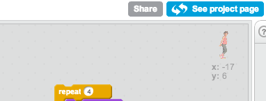
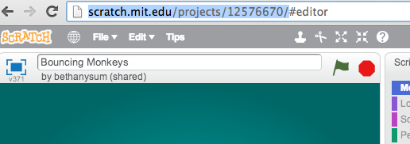

Make sure you share your project before you submit the link!

To submit the link in the form, select the url in your web browser and copy and paste it into the form. On macs, hold down the 'command' and 'c' keys to copy and the 'command' and 'v' keys to paste.
